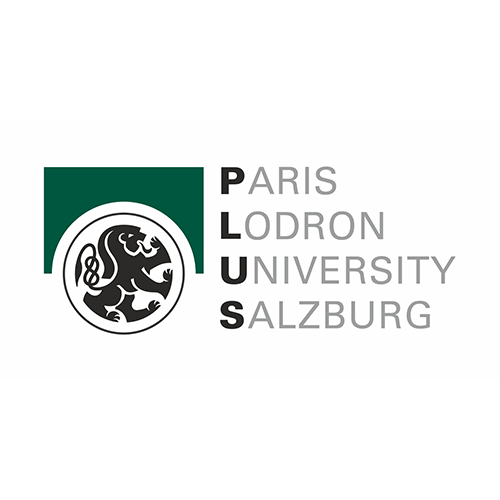

Recent Projects
University Projects

Gallery
Wildfire Monitoring – Tizi Ouzou (2021)
Sentinel-2 imagery processed using Google Earth Engine to visualize pre-fire vegetation conditions.
Data source: Copernicus Sentinel-2 L2A • Processed in Google Earth Engine
Certificates

Affiliations



Co-funded by the European Union · Copernicus Master in Digital Earth